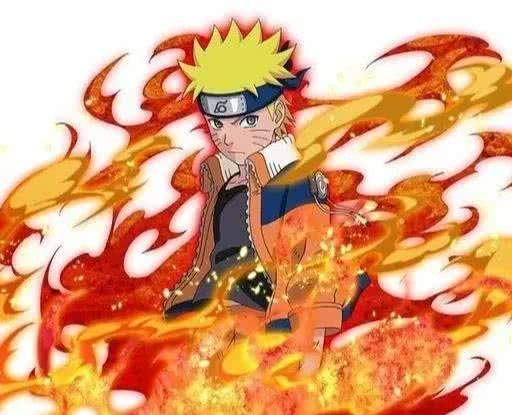
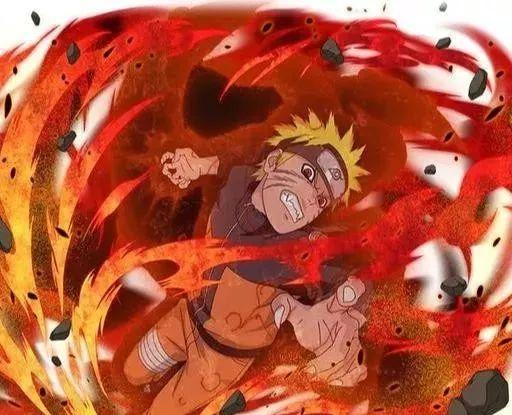
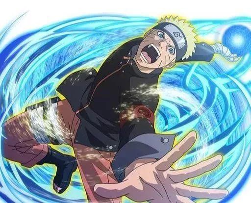
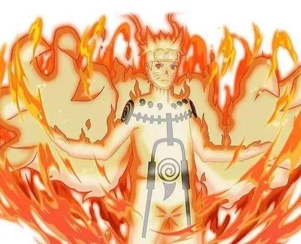

九尾查克拉形態

-
鳴人的第一種形態，九尾查克拉形態。
-
這個形態的鳴人可以使用部分九尾查克拉進行戰鬥，但是無法操控九尾，尋常忍者會被秒殺，實力接近上忍，但是遠不如卡卡西。
九尾暴走形態

-
鳴人的第二種形態，九尾暴走形態。此時的鳴人被九尾控制了心智，身體被九尾狂暴的查克拉操控，變成了一個野獸。
-
暴走形態使用的查克拉極多，會對身體造成很大的負擔，只有仙術可以限制此時的鳴人。
螺旋丸形態

-
鳴人的第三種形態，螺旋丸形態。鳴人在綱手和自來也的指導下學會了螺旋丸，並且更進一步的學會了螺旋手裏劍。
-
只會螺旋丸，鳴人的實力十分弱小，連綱手的一根汗毛都不能碰到，但是螺旋手裏劍卻可以讓鳴人擊敗佩恩。
仙術九尾形態

-
鳴人的第四種形態，仙術九尾形態。在妙木山修行了仙術之後，鳴人實現了九尾查克拉與仙術的結合，實力飆升。
-
此時的鳴人可以與宇智波斑這樣傳說中的人戰鬥，實力為超影級，接近四代火影。